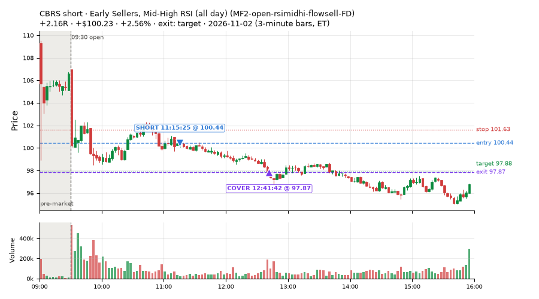
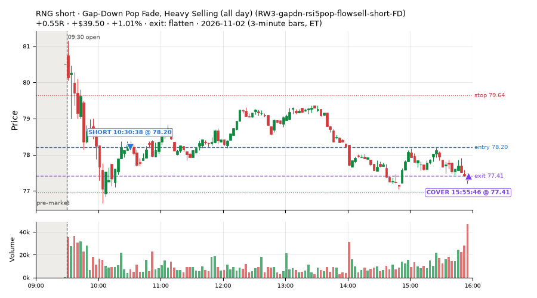
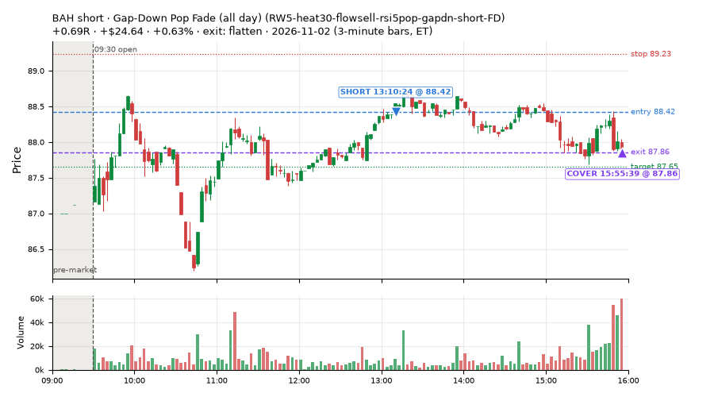
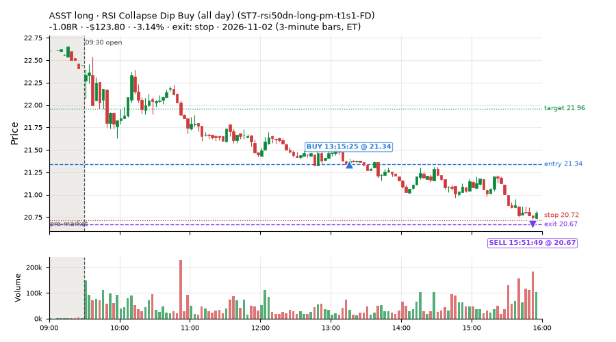
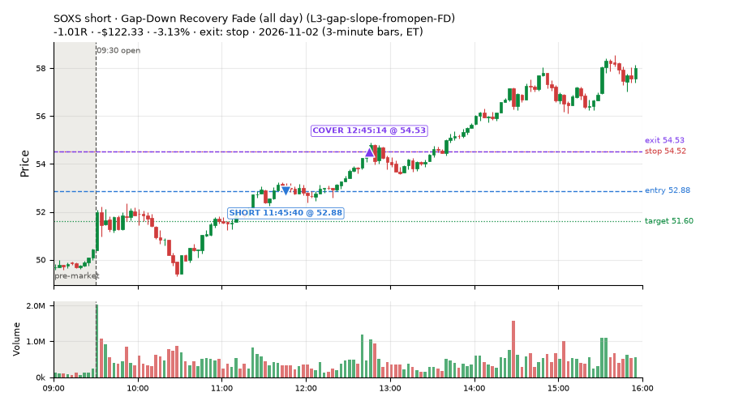
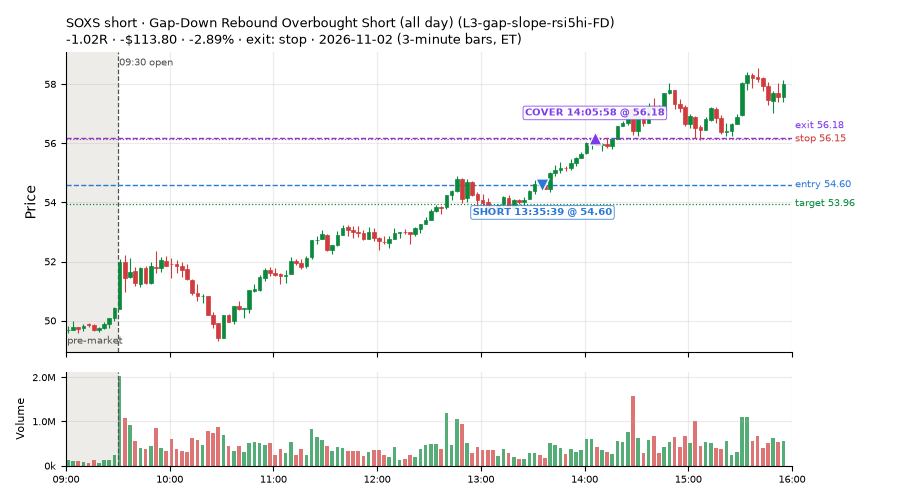
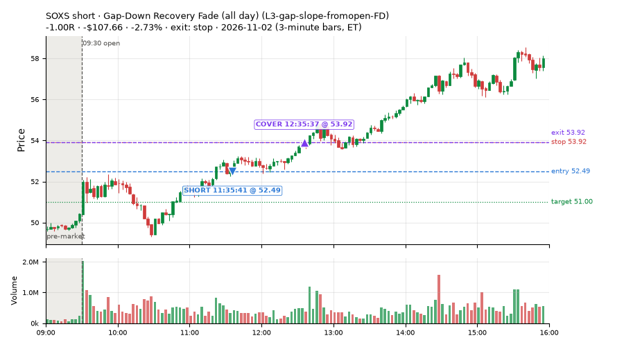
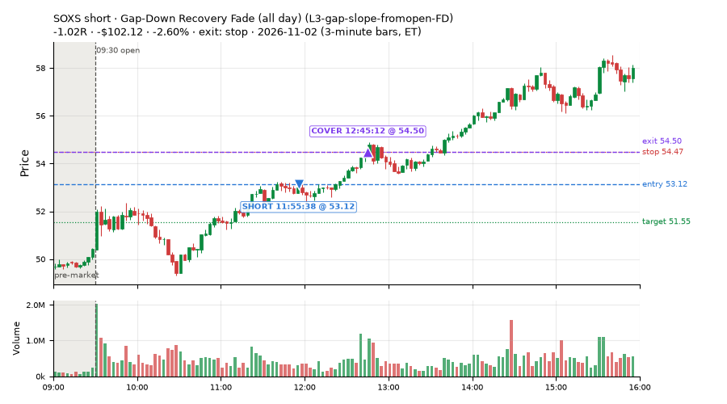

12 trades · win rate 25% · P/L $-614.39
PROBATION: no live setup has passed both locked test periods. 10 owner-directed setups added 2026-10-08 (MarcoFlow top 5 + 5 new), untested live. RW6G1 (RW6 + VWAP band guard) added 2026-10-09, probation.

| Symbol | Setup | Side | In | Out | Entry | Exit | Exit reason | % gained | P/L |
|---|---|---|---|---|---|---|---|---|---|
| CBRS | Early Sellers, Mid-High RSI (all day) (MF2-open-rsimidhi-flowsell-FD) | short | 11:15 | 12:41 | 100.44 | 97.87 | target | +2.56% | $100.23 |
| RNG | Gap-Down Pop Fade, Heavy Selling (all day) (RW3-gapdn-rsi5pop-flowsell-short-FD) | short | 10:30 | 15:55 | 78.20 | 77.41 | flatten | +1.01% | $39.50 |
| BAH | Gap-Down Pop Fade (all day) (RW5-heat30-flowsell-rsi5pop-gapdn-short-FD) | short | 13:10 | 15:55 | 88.42 | 87.86 | flatten | +0.63% | $24.64 |
| Symbol | Setup | Side | In | Out | Entry | Exit | Exit reason | % lost | P/L |
|---|---|---|---|---|---|---|---|---|---|
| ASST | ST7-rsi50dn-long-pm-t1s1-FD | long | 13:15 | 15:51 | 21.34 | 20.67 | stop | -3.14% | $-123.80 |
| SOXS | L3-gap-slope-fromopen-FD | short | 11:45 | 12:45 | 52.88 | 54.53 | stop | -3.13% | $-122.33 |
| SOXS | L3-gap-slope-rsi5hi-FD | short | 13:35 | 14:05 | 54.60 | 56.18 | stop | -2.89% | $-113.80 |
| SOXS | L3-gap-slope-fromopen-FD | short | 11:35 | 12:35 | 52.49 | 53.92 | stop | -2.73% | $-107.66 |
| SOXS | L3-gap-slope-fromopen-FD | short | 11:55 | 12:45 | 53.12 | 54.50 | stop | -2.60% | $-102.12 |








Signal to fill: median 1s, 90th percentile 3s (12 trades). Bars close each minute; the order follows the bar close.
Best excursion (MFE): median 0.24R; worst (MAE) median 1.02R. 50% of trades never got +0.25R in our favour; 0 reached +1R and still closed at or below 0.
| Symbol | Setup | Best R | Worst R | Closed R |
|---|---|---|---|---|
| SOXS | L3-gap-slope-fromopen-FD | +0.92 | -1.04 | -1.00 |
| SOXS | L3-gap-slope-fromopen-FD | +0.53 | -1.19 | -1.02 |
| IWV | MF4-h40-open-flowsell-FD | +0.18 | -1.32 | -1.25 |
| SOXS | L3-gap-slope-fromopen-FD | +0.29 | -1.13 | -1.01 |
| IWB | MF4-h40-open-flowsell-FD | +0.20 | -1.02 | -1.06 |
| Entry time | Trades | Win | Avg R | P/L |
|---|---|---|---|---|
| 09:50-10:30 | 2 | 0% | -1.15 | $-22.50 |
| 10:30-11:30 | 2 | 100% | +1.35 | $139.73 |
| 11:30-13:00 | 4 | 0% | -1.01 | $-417.86 |
| 13:00-14:00 | 3 | 33% | -0.47 | $-212.96 |
| 14:00-16:00 | 1 | 0% | -0.99 | $-100.80 |
| Setup | Trades | Win | Avg R | Adj R (net of SPY) | P/L |
|---|---|---|---|---|---|
| Gap-Down Recovery Fade (all day) (L3-gap-slope-fromopen-FD) | 4.0 | 0% | -1.01 | -1.12 | $-417.86 |
| Gap-Down Rebound Overbought Short (all day) (L3-gap-slope-rsi5hi-FD) | 2.0 | 0% | -1.01 | -1.12 | $-214.60 |
| Early Sellers, Mid-High RSI (all day) (MF2-open-rsimidhi-flowsell-FD) | 1.0 | 100% | +2.16 | +1.84 | $100.23 |
| Early Sellers, Strong Heat (all day) (MF4-h40-open-flowsell-FD) | 2.0 | 0% | -1.15 | +0.02 | $-22.50 |
| Gap-Down Pop Fade, Heavy Selling (all day) (RW3-gapdn-rsi5pop-flowsell-short-FD) | 1.0 | 100% | +0.55 | -0.24 | $39.50 |
| Gap-Down Pop Fade (all day) (RW5-heat30-flowsell-rsi5pop-gapdn-short-FD) | 1.0 | 100% | +0.69 | -0.31 | $24.64 |
| RSI Collapse Dip Buy (all day) (ST7-rsi50dn-long-pm-t1s1-FD) | 1.0 | 0% | -1.08 | -0.80 | $-123.80 |
Market direction (SPY, beta 1) accounted for $111.70 of today's $-614.39; the rest ($-726.09) came from the setups themselves. Avg R net of SPY: -0.51 (incl. a hedge leg's cost; report only).
10 setups live today. Today: 322 signals, 12 taken, 8 lost because another setup held the symbol (2%). Since 2026-10-06 (20 sessions): 1601 signals, 759 taken, 95 lost to other setups (6%). Peak open positions today 5 of 77 slots. Earnings blackout removed 1857 symbols before scanning.
Simulated playing time (not live): 835 what-if trades of signals not taken, avg -0.21R, 44% winners; of them 95 lost to another setup (avg -0.08R).
Silent: intraday_momentum · Crowded out: MF4-h40-open-flowsell, MF3-open-flowsell-rsi5hi, MF5-flowsell-vwapup-rsi5hi · Starved: MF4-h40-open-flowsell-FD, MF2-open-rsimidhi-flowsell
| Prio | Setup | Today sig / taken | Sessions | Signals / taken / trades | Taken/day | Expected/day | Lost to other setups | Lost to (setup n) | Top skip reasons | SIMULATED: not-taken n / avg R / win | Verdict |
|---|---|---|---|---|---|---|---|---|---|---|---|
| 1 | Gap-Down Pop Fade (all day) RW5-heat30-flowsell-rsi5pop-gapdn-short-FD | 4 / 1 | 12 | 93 / 71 / 71 | 5.92 | 12.79 | 0 | – | spread / quote / size 12, not shortable / shorts off 9, daily loss cap 1 | 22 / -0.17R / 41% | ok 29.6 entries/week |
| 2 | Gap-Down Pop Fade, Heavy Selling (all day) RW3-gapdn-rsi5pop-flowsell-short-FD | 6 / 1 | 12 | 81 / 53 / 53 | 4.42 | 13.59 | 1 | CWT14-failbrk-pdl-p10-lowvol-long 1 | not shortable / shorts off 16, spread / quote / size 11, symbol held by another setup 1 | 28 / +0.04R / 50% | ok 22.1 entries/week |
| 3 | Early Sellers, Mid-High RSI (all day) MF2-open-rsimidhi-flowsell-FD | 7 / 1 | 10 | 68 / 40 / 40 | 4.00 | 10.09 | 4 | RW5-heat30-flowsell-rsi5pop-gapdn-short-FD 4, RW3-gapdn-rsi5pop-flowsell-short-FD 4, MF2-open-rsimidhi-flowsell-FD 4 | not shortable / shorts off 13, spread / quote / size 11, symbol held by another setup 4 | 28 / +0.08R / 43% | ok 20.0 entries/week |
| 4 | Early Sellers, Strong Heat (all day) MF4-h40-open-flowsell-FD | 13 / 2 | 10 | 91 / 40 / 40 | 4.00 | 16.45 | 4 | RW5-heat30-flowsell-rsi5pop-gapdn-short-FD 4, RW3-gapdn-rsi5pop-flowsell-short-FD 4, MF2-open-rsimidhi-flowsell-FD 3 | not shortable / shorts off 27, spread / quote / size 16, symbol held by another setup 4 | 51 / +0.02R / 71% | starved 4.00 entries/day vs ~16.45 expected |
| 5 | RSI Collapse Dip Buy (all day) ST7-rsi50dn-long-pm-t1s1-FD | 1 / 1 | 6 | 15 / 10 / 10 | 1.67 | 2.17 | 0 | – | spread / quote / size 5 | 5 / +0.48R / 80% | slow 8.3 entries/week; ~7 weeks to 60 trades |
| 6 | Gap-Down Rebound Overbought Short (all day) L3-gap-slope-rsi5hi-FD | 73 / 2 | 2 | 90 / 3 / 3 | 1.50 | – | 2 | L3-gap-slope-fromopen-FD 2 | not shortable / shorts off 73, spread / quote / size 9, daily loss cap 3 | 84 / -0.51R / 36% | slow 7.5 entries/week; ~8 weeks to 60 trades |
| 7 | Gap-Down Recovery Fade (all day) L3-gap-slope-fromopen-FD | 213 / 4 | 4 | 342 / 27 / 27 | 6.75 | – | 13 | L3-gap-slope-fromopen-FD 13 | not shortable / shorts off 257, daily loss cap 26, spread / quote / size 19 | 313 / -0.39R / 33% | ok 33.8 entries/week |
| 8 | Big Gainer Dip-and-Pop NS1-rsidip-rsi5pop-long | 0 / 0 | 18 | 15 / 12 / 12 | 0.67 | 0.92 | 0 | – | spread / quote / size 3 | 3 / +0.40R / 100% | slow 3.3 entries/week; ~18 weeks to 60 trades |
| 9 | Big Loser Flush Buy NS5-sma50-flush-oversold-long | 0 / 0 | 18 | 21 / 18 / 18 | 1.00 | 2.41 | 0 | – | spread / quote / size 3 | 3 / +0.92R / 100% | slow 5.0 entries/week; ~12 weeks to 60 trades |
| 10 | Early Sellers, Strong Heat MF4-h40-open-flowsell | 5 / 0 | 18 | 68 / 21 / 21 | 1.17 | 7.24 | 22 | MF4-h40-open-flowsell-FD 17, MF3-open-flowsell-rsi5hi-FD 4, MF3-open-flowsell-rsi5hi 3 | symbol held by another setup 22, spread / quote / size 14, not shortable / shorts off 11 | 47 / -0.11R / 60% | crowded-out 22 of 68 signals (32%) lost to setups already holding the symbol |
Every trade is attached as a CSV you can open and edit in Excel or Google Sheets. Live page: https://misiti15.github.io/MCF/live/